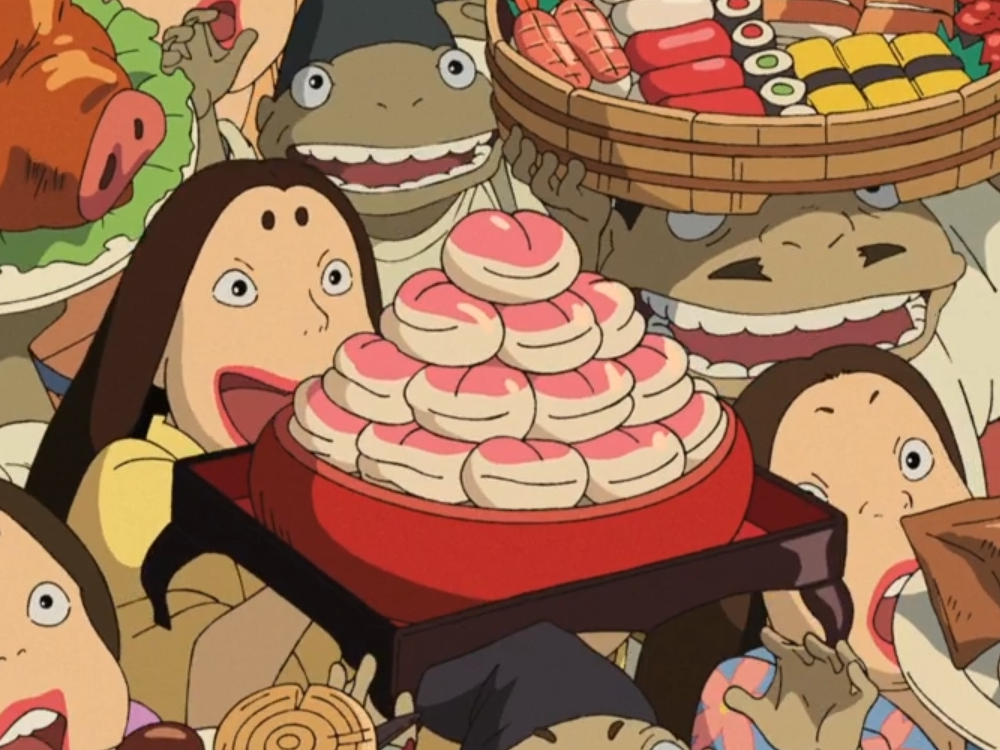

Peach Custard Buns
Recipe by
IssaGrill on YouTube.
(Makes 6 buns)
Ingredients
Peach Custard
- 3 large egg yolks
- 3 tbsp (50g) chunky peach jam
- 2 tbsp (16g) corn starch
- 1 1/2 (345g) cup milk
- 1 tbsp (14g) butter
- 1 tsp (5g) vanilla extract
- pinch of salt
Buns
- 1 cup (210g) cake flour + extra ½ tbsp (\~5g) for kneading
- 1 tsp (3g) yeast
- 1 tbsp (13g) sugar
- pinch of salt
- 120g milk
- pink food coloring
Instructions
For Custard
- Whisk together egg yolks, peach jam, corn starch, and a pinch of salt until combined.
- Simmer milk in a pot on Medium heat (\~7 minutes) while occasionally stirring, then ladle a cups worth into the
egg mixture. Whisk until combined, then add the egg-milk mixture back into the simmering milk.
- Constantly mix and simmer the mixture on Medium heat for 8 minutes until thick.
- Once you've reached your desired consistency, remove from the heat and add butter and vanilla extract.
- Cool your custard to room temperature.
For Buns
- Combine cake flour, yeast, sugar, and salt together.
- Pour in milk, and combine until a dough is formed. Knead this dough using hand-over-hand method by alternatingly pushing
with the heel of your hands. Fold into itself and repeat for \~6 minutes or until the dough becomes smooth.
- If it is too sticky add a dusting of flour, but don't add too much as doughs tend to get smoother
with kneading so just trust the process.
- Divide dough into 6, and roll a single piece of dough out 4 times before adding in your cooled custard.
- Seal your dough, remove extra dough, and roll with your hands to get a smooth sphered bun.
- Create indentations using a bench scraper, and paint with pink food coloring.
- Rise for \~15 min (Vancouver was really hot that I didn't need to do this step) or until super
soft and the bun feels like it's filled with air.
- Lastly steam for 8 minutes and enjoy! :')